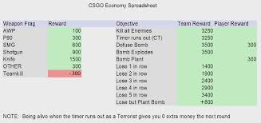

Knowing when to buy and when to save can help you win rounds. If your team is buying pistols and you are buying a rifle then you will most likely lose the round, and not be able to buy as a team in the next round. There are two magic numbers that you need to reach to buy a rifle and armor. 3750 on ct side and 3700 on t side. On ct side you don't need a helmet if you are playing against ak's because the ak will one hit headshot even if you have a helmet, the m4 on the other hand will not one hit an enemy t if they have a helmet so it's a good idea to buy a helmet on every round on t side. On ct side you will really need 2-3 kits, 1 for each anchor of the site (the player who won't rotate right away) and 1 for the mid player if they have the money. Any extra cash should be spent on nades. 